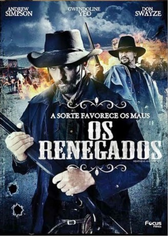

#2393 Heathens and Thieves
 
 IMDB-Wertung: 5.2 / 10
IMDB-Wertung: 5.2 / 10  Metascore: 0
Metascore: 0 
Nord-Kalifornien 1870: Das Gerücht, ein chinesischer Eisenbahn-Arbeiter sei mit gestohlenem Gold auf einer verlassenen Ranch untergetaucht, erregt die Gemüter. Als die beiden Wilderer Saul und Bill davon hören, schmieden die beiden einen Plan: Saul, der jüngere von beiden, lässt sich bei dem chinesischen Farmer Zhen, bei dem er den Schatz vermutet, als Landarbeiter anstellen - dabei ist ihm jeder Trick recht, um hinter das Geheimnis des Goldes zu kommen. Sauls Partner Bill dagegen wartet versteckt auf die passende Gelegenheit anzugreifen. Doch das Spiel geht nicht auf: Als plötzlich eine Handvoll Männer aufkreuzen, die ebenfalls von dem gestohlenen Schatz erfahren haben, kommt es zu einigen heftigen Auseinandersetzung. Saul und Bill müssen sich eingestehen, dass sie sich noch viel übleren Männern als sich selbst stellen müssen wollen sie das riskante Spiel aus Bluff und Verrat nicht nur überleben, sondern am Ende auch das Gold in ihren Besitz bringen, müssen sie ihre Pläne ändern.
Jahr: 2012
Dauer: 109 Minuten
FSK:
Land: USA Studio: Phase 4 FilmsTonspuren: DTS - ,
Untertitel:
Auflösung: 720p (1280x720) Größe: 4147 MB
Genre: Thriller, Western, Mystery
Regisseur: Megan Peterson, John Douglas Sinclair
Drehbuch: John Douglas Sinclair
Soundtrack: Sean R. Ferguson
Darsteller:
 Andrew Simpson als Saul
Andrew Simpson als Saul Gwendoline Yeo als Kun Hua
Gwendoline Yeo als Kun Hua Richard Doyle als Bill
Richard Doyle als Bill- Michael Robert Brandon als Moses
 Tom Proctor als Sheriff Ashplant
Tom Proctor als Sheriff Ashplant- Joel Patrick Berry als Deputy Clayborne
- Jesse James Youngblood als Bronco
- John A. Lorenz als Paco
- Cecilie Bull als Pearl
- Josh Tessier als Mercenary
- Don Swayze als Sherman
- Boyuen als Zhen
- Roy Hall Jr. als Ed
- Katie Billings als Baby Katie
- Anna Castelaz als Saloon Waif
- Bernard Dowling als Mercenary
- Roy Hall Sr. als Townsman
- John Hammond als Blacksmith
- Howard Leonard als Townsman
- J.J. Lewis-Nichols als Saloon Woman
- Ned Nichols als Townsman
- Cody Shick als Street Urchin
- Kyle Shick als Street Urchin
- Kaylee Tan als Baby Katie
- Keith Taylor als Townsman
- Terry Weekley als Townsman
Datei: X:\HD-Western-2000-2015\Heathens and Thieves (2012, FSK, 1280x720).mkv seit 04.11.2015
Festplatte: HD Eastern+Western
 Es gibt insgesamt 61 Filme in der Gruppe 'HD-Western-2000-2015'
Es gibt insgesamt 61 Filme in der Gruppe 'HD-Western-2000-2015'